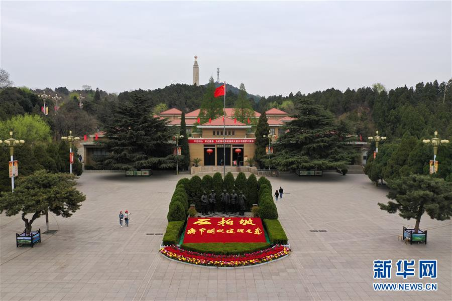
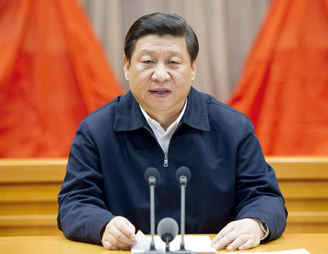
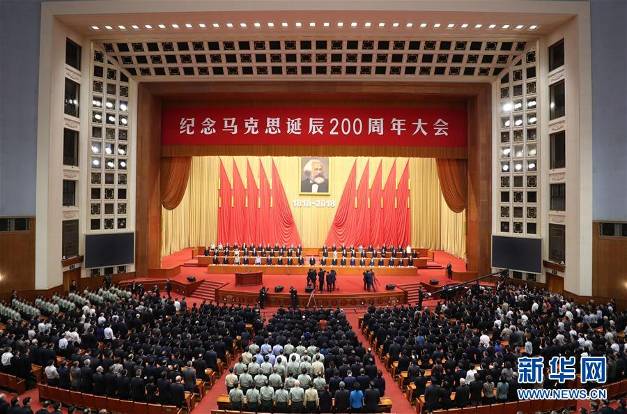
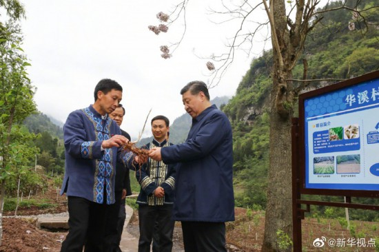

走进新时代
- 
- 
- 
- 
庆祝中华人民共和国成立70周年
20世纪80年代整党运动中的“整党促经济”
建国70周年经典事迹
今天是2019年元旦，一元复始，万象更新。今年是新中国成立70周年，也是全面建成小康社会关键之年，包括第二届“一带一路”国际合作高峰论坛，新个税法实施等等，一系列国家大事和民生关切，让新的一年备受期待。
在改革开放的40年里，有相当长的一段时间，比如1980年到2010年这30年，劳动力供给非常丰富，而且很便宜，每年又有大量新增人口进入劳动力市场，新增劳动力的平均人力资本水平比存量劳动力高，因此人力资本得到改善。
世纪的头8年，中国在世界经济的排位几乎是一年上一个名次，2008年跃居世界第三大经济体，2009年或2010年可能成为世界第二大经济体，外汇储备跃居世界第一，成为世界第三贸易大国。经济总量在2008年达到4.4万亿美元